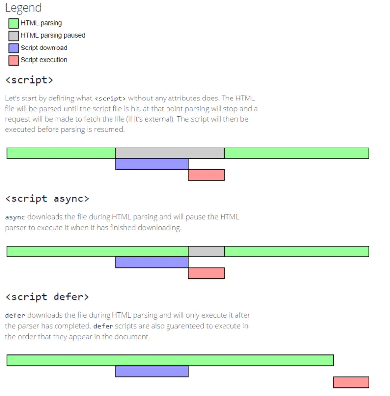

渲染过程
当浏览器从服务器拿到资源之后，就开始渲染的过程。
- 根据html内容依次解析生成DOM树（document object model）
- 根据css生成CSSOM树（css object model）
- 根据DOM与CSSOM生成渲染树（render tree）
- 根据rendertree 进行渲染展示，过程中遇到script标签时，会暂停渲染
注意：
解析的过程中如果遇到link，style标签，会依次请求css资源并解析CSSOM树，这个过程是异步的，也就是说请求css资源并解析的过程不会影响DOM树的解析。但是遇到script标签则会同步下载，解析并执行js内容，直到同步代码执行完成之后，才会继续解析生成剩余的DOM；script标签与script async、script defer的区别
- script标签下载和执行都是同步的
- async 类型的标签下载是异步的，但执行时依然会阻塞DOM解析
- defer 类型则是下载过程是异步的，但执行会选择在DOM解析完成的时候执行

css中link标签引用与@import引用区别
- link是一个html标签，而@import是css的新特性
- link标签会立即下载并解析
- import会等到页面全部内容解析完了才下载并解析（和script的defer特性挺像的）
- 老浏览器可能不支持@import，是css2的新规则